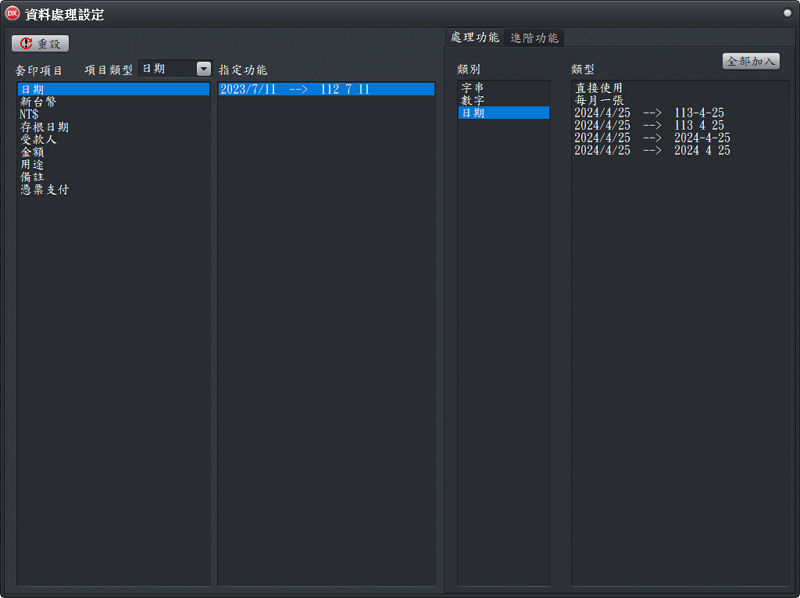
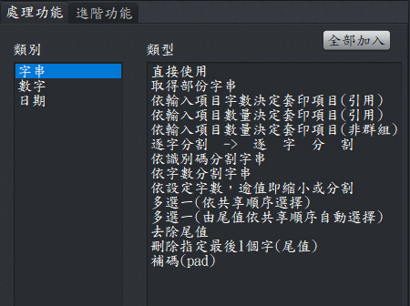
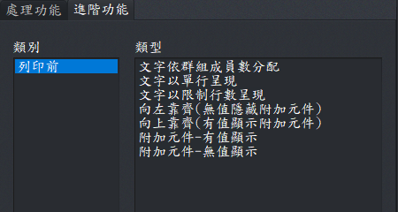

資料處理設定
指定資料字串類型的套印項目，對使用者輸入的資料進行處理的方式，例如將日期直接使用或分割為年月日。

資料處理設定視窗
- 工作區域及工作頁說明：
- 「套印項目」區域：這裏僅處理資料字串類型項目，而且該項目必需先於「資料配置設定」視窗，被置於「A.取得資料項目」區域，才能顯示在此區域內指定資料處理功能。
- 「指定功能」區域：顯示指定「套印項目」已指派的資料處理功能，資料處理功能來自於「處理功能」工作頁及「進階功能」工作頁，例如將輸入的資料轉換成套印所需的格式，例如將日期依年月日分開。
- 「處理功能」工作頁：接收到資料後的處理方式。例如將日期切割為年、月、日
- 「進階功能」工作頁：列印前的資料處理方式。例如依可供列印的範圍將字體自動縮小，以列印出完整的字串。
- 資料處理管理：
- 增加資料處理功能流程：
- 於「套印項目」區域，指定要被指派資料處理的套項目，例如日期。
- 於「處理功能(工作頁) > 類別」點選日期。
- 於「處理功能(工作頁) > 類型」點選「2024/4/25 -→ 113-4-25」
- 刪除資料處理功能：請在資料處理功能區域，直接用滑鼠左鍵於要刪除的功能上面，快點2下即可。

處理功能工作頁-字串

進階功能工作頁-列印前